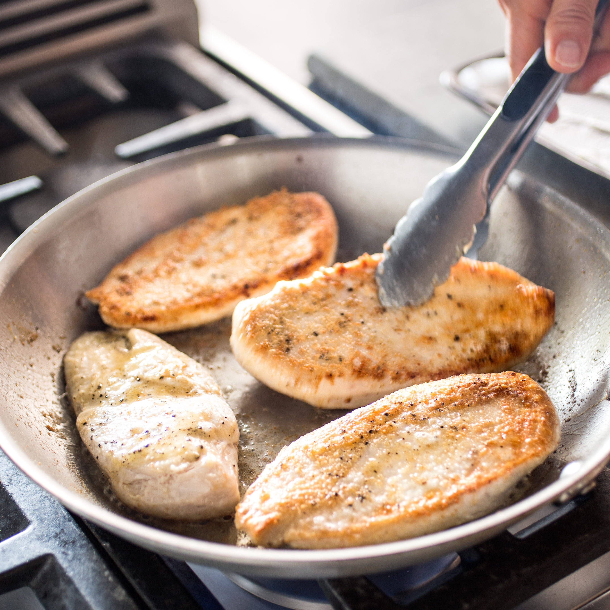

Go back
Chicken

Pan fried chicken. Tasty and healthy
Ingredients
- Boneless chicken breast w/o tenderloin
- 1.5 tablespoons vegetable oil
- 1/4 cup flour
- Kosher salt
- Freshly ground black pepper
Tools
- 10 inch stainless steel pan
- Western chef knife
- Plastic wrap
- Meat pounder, or something big, flat, and heavy
- Tinfoil
- Meat thermometer
Steps
- Cut chicken breast in half
- Wrap both halves in plastic and pound to 1/4 inch thickness
- Lightly flour one side of each breast
- Heat oil in pan until lightly smoking
- Lay chicken in floured side down, and let cook for 2.5 minutes
- Flip and take out when internal temp reaches 155 degrees fahrenheit
- Let rest for 5 minutes under tinfoil before eating